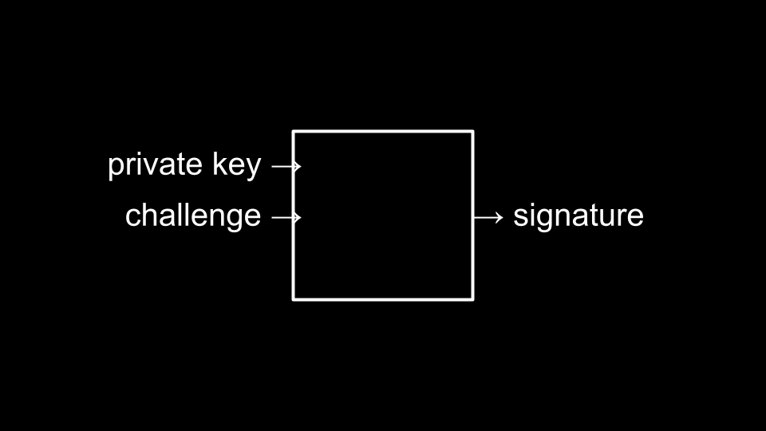

网络安全
- Recap
- Looking Ahead
- 网络安全
- Passwords
- Phone 安全
- Password Managers
- Two-factor Authentication
- Hashing
- 密码学
- Passkeys
- Encryption
- Deletion
- Summing Up
Recap
- Over these past ten 周次, you have been drinking from the proverbial firehose.
- While in this 课程, you learned how to program many 编程 languages; indeed, our great hope is that you learned how to program in all: Regardless of the 编程 language.
- Further, we hope that you learned how to solve problems above all else.
Looking Ahead
- As you journey from the work of this 课程 to the 世界 outside CS50, you 五月 want to take a number of steps to prepare.
- To be able to execute commands on the terminal, much like you did on CS50.dev, you can install command-line 工具 on your Mac or PC.
- You can learn 更多 关于 Git.
- You can 下载 and learn 关于 VS Code.
- You can host a website using GitHub or Netlify.
- You can host a web app using AWS, Azure, or Google Cloud.
- You can ask 问题 in relevant online 社区.
- You can ask 问题 using AI-based 工具 like OpenAI and GitHub Copilot.
- You can take any of our other CS50 课程.
- You can join one of our many 社区.
网络安全
- Today will be a high-level overview of some of the 网络安全-related topics.
- 网络安全 is understanding how our data is secure or not secure.
Passwords
- One 网络安全 concern relates to our passwords.
- Passwords are one method used to secure data online.
-
There are common passwords that people use:
1. 123456 2. admin 3. 12345678 4. 123456789 5. 1234 6. 12345 7. password 8. 123 9. Aa123456 10. 1234567890 - If you have one of the passwords above, most likely, millions of people have the same password as you!
- Adversaries in the 世界 will start with this list.
- Bad guys can also guess most of the heuristics you use to add symbols to your password.
- Adversaries can use brute-force attacks, using a dictionary of passwords to simply try every possible password.
- Your password is likely not as secure as you think it is.
Phone 安全
- Many phones are secured by a four-digit code.
- The most simple form of attack would be to brute-force attempt all possible passwords.
- There are 10,000 possible passwords when using a four-digit code.
- If it takes one guess per second, it will take 10,000 seconds to crack the password.
-
However, if a programmer creates a program to generate all possible codes, the 时间 必需 would be minimal. Consider the following code in Python:
from string import digits from itertools import product for passcode in product(digits, repeat=4): print(passcode) - It should be quite disconcerting that the code above could take only a few seconds (at most!) to discover your password.
- We could improve our 安全 by switching to a four-letter password. This would result in 7,311,616 possible passwords.
- Including uppercase and lowercase characters would create over 78 million possibilities.
-
Consider how we could modify your code to discover these passwords:
from string import ascii_letters from itertools import product for passcode in product(ascii_letters, repeat=4): print(passcode) -
We could even add the ability to look at all possible eight-digit passwords with letters, numbers, and punctuations:
from string import ascii_letters, digits, punctuation from itertools import product for passcode in product(ascii_letters + digits + punctuation, repeat=8): print(passcode) - Expanding to eight characters, including upper and lowercase letters, numbers, and symbols, would result in 6,095,689,385,410,816 possible combinations.
- In the digital 世界, you simply want your password to be better than other peoples’ passwords such that others would be attacked far before you—as you are a much 较少 convenient target.
- A downside of using such a long password is the downside of having to remember it.
- Accordingly, there are other defenses that could be employed to slow down an attacker. For 示例, some phone manufacturers lock out those who guess a password incorrectly.
- 安全 is 关于 finding a “sweet spot” between the trade-offs of enhanced 安全 while maintaining convenience.
Password Managers
- Password managers can be used to create very challenging passwords and remember them for you.
- The probability of a password secured by a password manager being broken is very, very low.
- You’d hope that such password managers are secure. However, if one gains access to your password manager, they would have access to all your passwords.
- In the end, you are far 较少 likely to be at risk by those you live with—and much 更多 likely to be at risk by the billions of other people on the 互联网.
- As mentioned prior, you can make a decision based on a balance between 安全 and convenience.
Two-factor Authentication
- Adding another means by which you must authenticate adds further 安全. However, there is a human cost as you might not have access to your second factor.
- These are implemented as one-时间 passwords of sorts that are sent to an 电子邮件, device, or phone number.
- Always, 安全 policies attempt to balance the needs of 安全 and human convenience.
Hashing
- Your account information and other sensitive data should not be stored as raw text in an online database.
- If a database becomes compromised and all credentials are stored in plain text, credentials for other services at other websites are likely also compromised.
- Hence, hashing 算法, as discussed earlier in this 课程, are used to store only hashed values of passwords.
- One-way hashing allows online services to actually never store the original password typed by the user: Only the hashed value of these passwords. Accordingly, if there is a breach, only the hashed value will be known.
- Rainbow tables are huge dictionaries that adversaries use to attempt to pre-hash possible passwords as a means by which to attempt to break the hash algorithm.
-
As an additional process to heightened 安全, programmers 五月 sometimes introduce salting where it becomes unlikely that multiple users 五月 have the same hash value to represent their passwords. You can imagine this as follows:

密码学
- Similar to hashing, a cipher algorithm can use a public key and text to create ciphertext.
- In turn, a private key and the ciphertext can be fed to the algorithm to decrypt the text.
Passkeys
- Passkeys are a new technology only emerging in the most recent months.
-
Through private keys and a challenge being fed to an algorithm, websites can authenticate you through the unique signature created by your device.

- Hence, passwords and usernames 五月 soon become obsolete.
Encryption
- Encryption is a way by which data is obscured such that only the sender and intended receiver can be 阅读.
- Early in this 课程, we learned a very simple algorithm to “shift” the text by one or 更多 characters as a rudimentary form of encryption.
- End-to-end encryption is a way by which encrypting and decrypting happen on the same system without a middleman. This prevents the middleman or a malicious actor from being able to snoop on your data. Zoom and Apple Messages can both utilize end-to-end encryption.
Deletion
- Trashing a file on your computer or emptying the trash can does not actually delete the actual bits of the file on your computer.
-
Instead, remnants of the files are left.

- Secure deletion is where the remnants of those files are turned into zeros and ones.
- Still, some remnants 五月 remain because of what is rendered inaccessible by the operating system.
- Full-disk encryption allows your entire hard drive to be encrypted. Thus, your deleted files are 较少 accessible to adversaries.
- Considering encryption, it’s this same technology that adversaries use to create ransomware that can, quite literally, hold your hard drive for ransom.
Summing Up
- Use a password manager.
- Use two-factor authentication.
- Use (end-to-end) encryption.